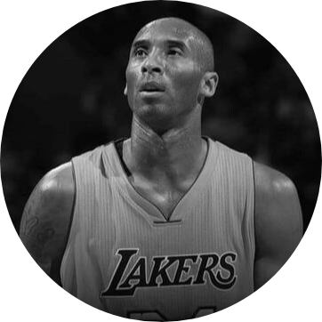

Kobe Bryant
1978-2020
Kobe Bean Bryant (/ˈkoʊbiː/ KOH-bee; August 23, 1978 – January 26, 2020) was an American professional basketball player.
A shooting guard, he spent his entire 20-year career with the Los Angeles Lakers in the National Basketball Association (NBA).
Regarded as one of the greatest players of all time.

American basketball player